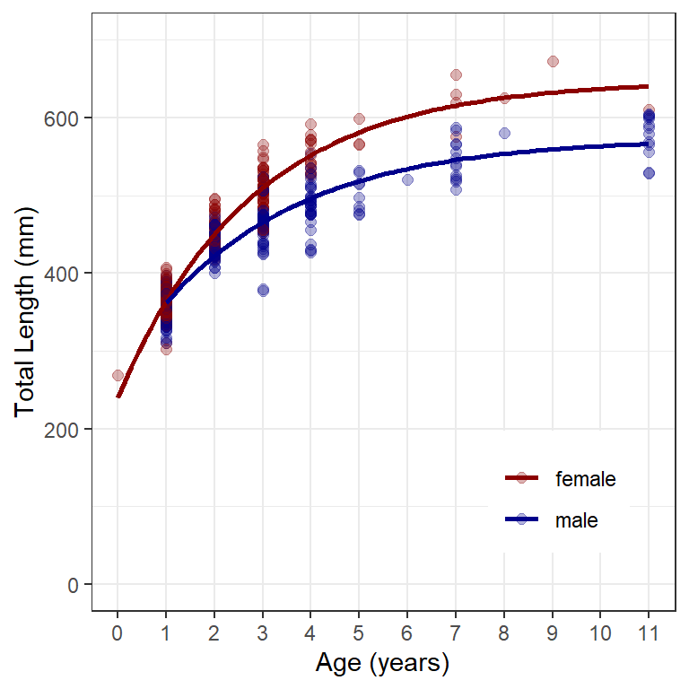
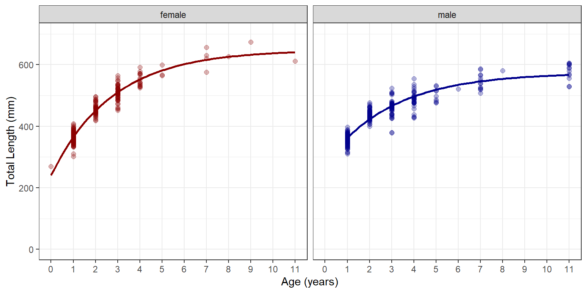
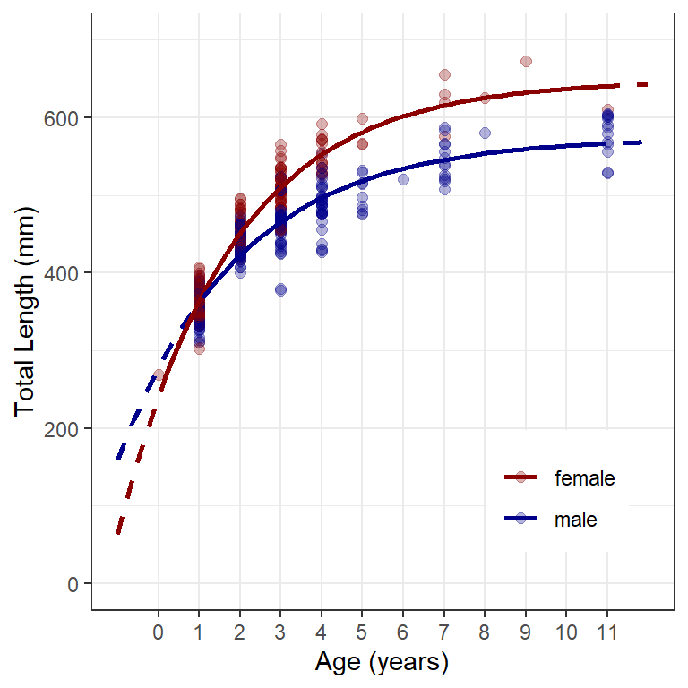
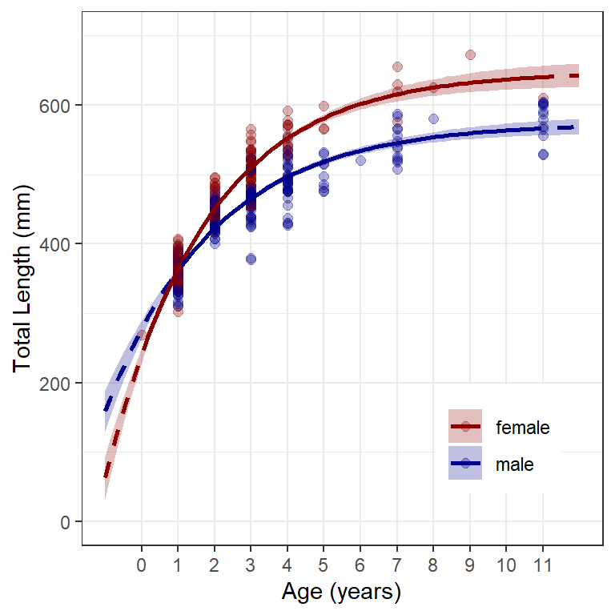
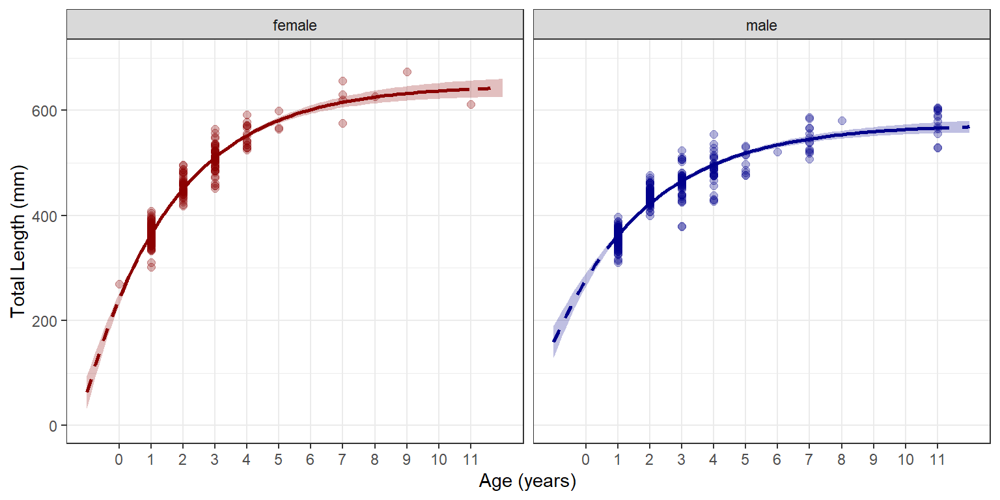
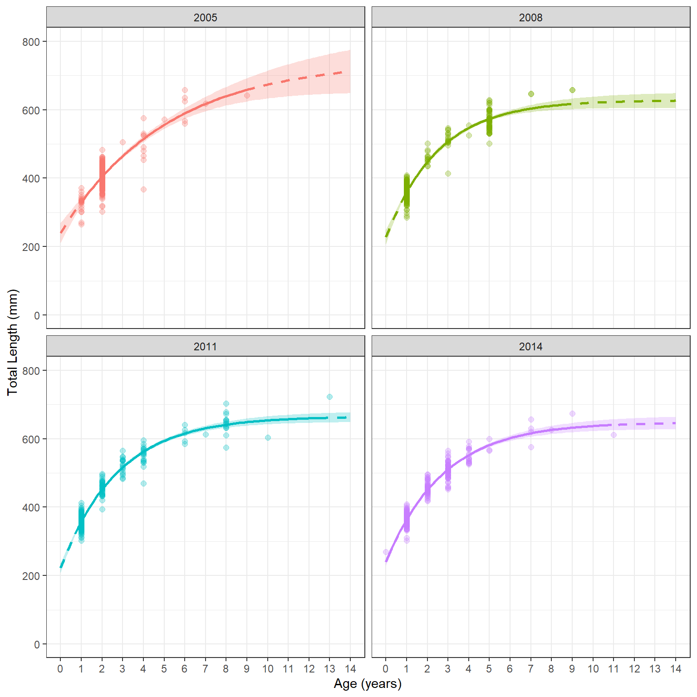

library(FSA) # for vbFuns(), vbStarts(), headtail(), peek()
library(dplyr) # for filter(), mutate(), group_by()
library(ggplot2)
theme_set(theme_bw())
Note
The following packages are loaded for use below. One function from investr is also used but the whole package is not loaded here. The data are also from FSAdata, which is not loaded below. I also set the default ggplot theme to theme_bw() for a classic “black-and-white” plot (rather than the default plot with a gray background).
Introduction
In a previous post I demonstrated how to plot the fit of a von Bertalanffy growth function (VBGF) for a single group of observed data. In this post, I explore methods to do the same for multiple groups of observed data (e.g., multiple sexes, locations, years).
I will again use the lengths and ages of Lake Erie Walleye (Sander vitreus) captured during October-November, 2003-2014 available in FSAdata. These data formed many of the examples in Ogle et al. (2017). My primary interest here is in the tl (total length in mm), age, and sex variables.1 I initially focus on Walleye from location “1” captured in 2014 in this example.2
1 See more details about the data.
2 For succinctness, I removed year as it only had one level after filtering and three variables related to the location of capture.
data(WalleyeErie2,package="FSAdata")
w14T <- WalleyeErie2 |>
filter(year==2014,loc==1) |>
select(-year,-setID,-loc,-grid)
headtail(w14T)#R| tl w sex mat age
#R| 1 445 737 female immature 2
#R| 2 528 1571 female mature 4
#R| 3 499 1138 male mature 4
#R| 612 521 1408 female mature 3
#R| 613 565 1745 female mature 3
#R| 614 530 1553 male mature 5As in the previous post, a function that uses the typical VBGF to predict mean length given a set of VBGF parameters and age is needed.3
3 Other parameterizations of the VBGF can be used with param= in vbFuns() as described in its documentation.
( vb <- vbFuns(param="Typical") )#R| function (t, Linf, K = NULL, t0 = NULL)
#R| {
#R| if (length(Linf) == 3) {
#R| K <- Linf[[2]]
#R| t0 <- Linf[[3]]
#R| Linf <- Linf[[1]]
#R| }
#R| Linf * (1 - exp(-K * (t - t0)))
#R| }
#R| <bytecode: 0x000001b27db58110>
#R| <environment: 0x000001b27dbadee8>
Model Fits Using geom_smooth()
One of the simpler ways to plot multiple VBGF fits uses geom_smooth(), which, as described in the previous post, uses nls() to fit the model “behind-the-scenes.” Thus, a set of starting values is needed. It is critical to note that using geom_smooth() requires the same starting values for each group. With this warning, possible starting values for the optimization algorithm may be obtained with vbStarts() as shown in the previous post.
( sv0 <- vbStarts(tl~age,data=w14T) )#R| $Linf
#R| [1] 591.1587
#R|
#R| $K
#R| [1] 0.3930388
#R|
#R| $t0
#R| [1] -1.544479The use of geom_smooth() to produce separate lines for the groups is exactly as described in the previous post, except that the variable for identifyng the groups (i.e., sex in this example) must be mapped to the color= aes()thetic. For Figure 1 I also used scale_color_manual() to demonstrate how to change the default colors of the points and lines. Additionally, in theme() I moved the legend into the plot panel4 and removed the default sex label that would appear on top of the legend.
4 In this case the legend is placed 80% down the x-axis and 20% up the y-axis.
ggplot(data=w14T,aes(x=age,y=tl,color=sex)) +
geom_point(size=2,alpha=0.3) +
scale_y_continuous(name="Total Length (mm)",limits=c(0,700)) +
scale_x_continuous(name="Age (years)",breaks=0:11) +
scale_color_manual(values=c("male"="darkblue","female"="darkred")) +
geom_smooth(method="nls",se=FALSE,
method.args=list(formula=y~vb(x,Linf,K,t0),start=sv0),
linewidth=1) +
theme(panel.grid.minor.x=element_blank(),
legend.position=c(0.8,0.2),
legend.title=element_blank())
An alternative visualization is to put the two groups into separate panels using facet_wrap().5 Note that color is superfluous in Figure 2, but I kept it for comparison to Figure 1. Mapping color to a variable will produce a legend by default. This legend was removed (in theme()), however, because it is redundant with the panel labels.
5 Simply put the grouping variable inside of vars() as the argument to facet_wrap().
ggplot(data=w14T,aes(x=age,y=tl,color=sex)) +
geom_point(size=2,alpha=0.3) +
scale_y_continuous(name="Total Length (mm)",limits=c(0,700)) +
scale_x_continuous(name="Age (years)",breaks=0:11) +
scale_color_manual(values=c("male"="darkblue","female"="darkred")) +
geom_smooth(method="nls",se=FALSE,
method.args=list(formula=y~vb(x,Linf,K,t0),start=sv0),
linewidth=1) +
theme(panel.grid.minor.x=element_blank(),
legend.position="none") +
facet_wrap(vars(sex))
Fitting the VBGF to Multiple Groups
Methods for fitting a von Bertalanfy growth function (VBGF) to multiple groups are detailed in Ogle (2016) and Ogle et al. (2017). Thus, this methodology will only be briefly explained here.
Fitting the VBGF to multiple groups requires creating an expression, rather than a function, with the VBGF defined over the multiple groups. The expression below codes the VBGF using the length and age variables from the data set used here (i.e., tl and age) and assuming different parameters should be estimated for each group.6 Identifying the different groups is accomplished here by appending [group], where group is replaced with the specific variable name that identifies the groups (i.e., sex here). The expression is assigned to an object name (i.e., vbLKt here).
vbLKt <- tl~Linf[sex]*(1-exp(-K[sex]*(age-t0[sex])))
I created vectors of group names (with unique()) and the number of groups (with length()) for ease of use below.
( grps <- unique(w14T$sex) )#R| [1] female male
#R| Levels: female male( ngrps <- length(grps) )#R| [1] 2
This model has six parameters – \(L_{\infty}\), \(K\), and \(t_{0}\) for each of the two groups (male and female Walleye). Starting values must be declared for each of these parameters. Here I find starting values from the data ignoring the groups (using vbStarts() as described in the previous post) and replicate those starting values for both groups.7
( sv0 <- vbStarts(tl~age,data=w14T) )#R| $Linf
#R| [1] 591.1587
#R|
#R| $K
#R| [1] 0.3930388
#R|
#R| $t0
#R| [1] -1.544479Map replicates the starting values in the list from vbStarts() with rep (the replicated function), the object returned from vbStarts(), and a numeric vector that explains how many times each parameter should be repeated (i.e., the same as the number of groups).
( svLKt <- Map(rep,sv0,c(2,2,2)) )#R| $Linf
#R| [1] 591.1587 591.1587
#R|
#R| $K
#R| [1] 0.3930388 0.3930388
#R|
#R| $t0
#R| [1] -1.544479 -1.544479The model is fit to the data by including the VBGF expression object, data=, and start= as arguments to nls(). The parameter estimates and confidence intervals may be extracted from the saved nls() object with coef() and confint().8 Note that the parameters will be appended with numbers in the alphabetical order of the groups.9 Thus, in this example, it is seen that the estimated \(L_{\infty}\) for females (appended with a “1”) is greater than that for males.
8 Column-bound here for aesthetic reasons.
9 Unless your chose to order the levels of the group variable differently.
fitLKt <- nls(vbLKt,data=w14T,start=svLKt)
cbind(Ests=coef(fitLKt),confint(fitLKt))#R| Ests 2.5% 97.5%
#R| Linf1 648.2083813 627.2685519 672.1242978
#R| Linf2 574.1512545 561.6722232 588.0005006
#R| K1 0.3615399 0.3171679 0.4106412
#R| K2 0.3354067 0.2946359 0.3805994
#R| t01 -1.2836317 -1.4846294 -1.0991040
#R| t02 -1.9702829 -2.2978880 -1.6783578
Model Fits from Predicted Values
The model fit above can be used to predict the mean length at age for all groups, both within and outside the observed range of ages. These results can then be used to show the model fit by group. However, a bit of work outside of ggplot is required to prepare the relevant data.
A data frame that contains predicted mean lengths at age over a range of ages for all groups is needed. I begin this process by finding (and assigning to an object for later use) the range of ages for each group.10
10 as.data.frame() removes the tibble returned by group_by(), which I don’t prefer
obsagerng <- w14T |>
group_by(sex) |>
summarize(min=min(age),
max=max(age)) |>
as.data.frame()
obsagerng#R| sex min max
#R| 1 female 0 11
#R| 2 male 1 11From this, I create a temporary vector of 101 ages11 evenly spaced over a range of ages larger than what was observed.12
11 Use a larger value for length.out= to make the line produced further below more smooth.
12 Zero was an observed age here, if not I usually make sure it is included.
ages <- seq(-1,12,length.out=101)I then create a data frame that has the name of each group repeated as many times as there are ages in the temporary age vector (i.e., 101 here) and has ages from the temporary age vector repeated for each group (i.e., twice here). Note the careful use of each= and times= in rep() below.
preds <- data.frame(sex=rep(grps,each=length(ages)),
age=rep(ages,times=ngrps))
headtail(preds)#R| sex age
#R| 1 female -1.00
#R| 2 female -0.87
#R| 3 female -0.74
#R| 200 male 11.74
#R| 201 male 11.87
#R| 202 male 12.00Predicted mean lengths at each age for each group are then appended to this data frame by giving the fitted nls() object and this data frame to predict().
preds <- preds |>
mutate(fit=predict(fitLKt,preds))
headtail(preds)#R| sex age fit
#R| 1 female -1.00 63.17550
#R| 2 female -0.87 90.03599
#R| 3 female -0.74 115.66324
#R| 200 male 11.74 568.37143
#R| 201 male 11.87 568.61804
#R| 202 male 12.00 568.85411Finally, I add a fourth variable that will be TRUE if the age is within the range of observed ages for the group. group_by() below behaves like a loop here in the sense that what follows that line will be completed for the first group, then the second group, and so on. For the mutate() lines suppose that we are working with the first group (i.e., “female”). In this case, unique(sex) will return female such that obsagerng[obsagerng$sex==unique(sex),] will find the row of obsagerng where its sex variable is equal to “female”. The $min appended to that will extract just the value in the min variable of that row (so the minimum observed age for females). The age>=obsagerng[obsagerng$sex==unique(sex),]$min portion is thus asking if the age variable in preds is greater than or equal to the minimum observed age for females. If it is it will return TRUE, otherwise FALSE will be returned. The second part mutate() asks if the age variable in preds is less than or equal to the maximum observed age for females, again returning TRUE or FALSE as appropriate. Those two conditions are connected with an & such that if they are both TRUE then a TRUE is returned, otherwise a FALSE is returned. The result is that the new inrng variable will be TRUE if the age variable within preds is within the observed range of ages for each sex in preds.13
13 FSA::peek() is used here to show an evenly spaced 20 rows in the data frame. This provides more output than headtail() for observing the results of code.
preds <- preds |>
group_by(sex) |>
mutate(inrng=age>=obsagerng[obsagerng$sex==unique(sex),]$min &
age<=obsagerng[obsagerng$sex==unique(sex),]$max)
FSA::peek(preds)#R| sex age fit inrng
#R| 1 female -1.00 63.1755 FALSE
#R| 11 female 0.30 282.5622 TRUE
#R| 21 female 1.60 419.6791 TRUE
#R| 32 female 3.03 511.9351 TRUE
#R| 43 female 4.46 566.9479 TRUE
#R| 53 female 5.76 597.4205 TRUE
#R| 64 female 7.19 617.9233 TRUE
#R| 74 female 8.49 629.2802 TRUE
#R| 85 female 9.92 636.9214 TRUE
#R| 96 female 11.35 641.4779 FALSE
#R| 106 male -0.48 225.8590 FALSE
#R| 117 male 0.95 358.5543 FALSE
#R| 128 male 2.38 440.6943 TRUE
#R| 138 male 3.68 487.8581 TRUE
#R| 149 male 5.11 520.7348 TRUE
#R| 159 male 6.41 539.6122 TRUE
#R| 170 male 7.84 552.7712 TRUE
#R| 181 male 9.27 560.9168 TRUE
#R| 191 male 10.57 565.5938 TRUE
#R| 202 male 12.00 568.8541 FALSE
Figure 3 is created by combining similar code from the previous post and the use of color= from above. In brief, geom_point() adds points at the observed lengths at age, the first geom_line() adds the fitted models from the predicted mean lengths at all ages in preds as dashed lines, and the second geom_line() adds the fitted models from the predicted mean lengths only at observed ages for each group as solid lines.14
14 Note the use filter() in the second geom_line() so that only data for which inrng==TRUE is used.
ggplot() +
geom_point(data=w14T,aes(x=age,y=tl,color=sex),
size=2,alpha=0.3) +
geom_line(data=preds,aes(x=age,y=fit,color=sex),
linewidth=1,linetype="dashed") +
geom_line(data=filter(preds,inrng),aes(x=age,y=fit,color=sex),
linewidth=1) +
scale_y_continuous(name="Total Length (mm)",limits=c(0,700)) +
scale_x_continuous(name="Age (years)",breaks=0:11) +
scale_color_manual(values=c("male"="darkblue","female"="darkred")) +
theme(panel.grid.minor.x=element_blank(),
legend.position=c(0.8,0.2),
legend.title=element_blank())
Model Fit with Confidence Band
Creating a graphic that has the model fit with confidence (or prediction) bands for multiple groups again requires some preparatory work before using ggplot().
For simplicity and completeness of presentation, the code below is repeated from above.
vb <- vbFuns(param="Typical") ## Typical VBGF
grps <- unique(w14T$sex) ## Names of groups
ngrps <- length(grps) ## Number of groups
obsagerng <- w14T |> ## Range of observed ages by group
group_by(sex) |>
summarize(min=min(age),
max=max(age))
sv0 <- vbStarts(tl~age,data=w14T) ## Starting values ignoring groupsAs before, starting values are needed for each group. Here, however, I place the starting values into a data frame where each row corresponds to one group and a variable that identifies the groups is included.15
15 For simplicity name this variable the same as it is in the main data frame.
( svLKt <- data.frame(sex=grps,
Map(rep,sv0,c(ngrps,ngrps,ngrps))) )#R| sex Linf K t0
#R| 1 female 591.1587 0.3930388 -1.544479
#R| 2 male 591.1587 0.3930388 -1.544479The starting values created here are the same for each group. This will likely work in most cases (of fish growth data) but likely not all. Starting values can be entered into the data frame manually as shown below.16
## Not run: Demo of manually entering starting values; not needed in this case
( svLKt <- data.frame(sex=grps,
Linf=c(630,580),
K=c(0.34,0.34),
t0=c(-1,-2)) )The method used here basically loops through the groups, uses the procedures of the previous post (for one group) and above to find fitted values and confidence (or prediction) bands for each group, and then (row) binds those results together to produce a synthetic data frame for all groups. The process for a single group is wrapped into a function called vbLOOP1() below. The ordered arguments to vbLOOP1() are a group name, the original data frame, the data frame of starting values for all groups, the data frame of observed age ranges, and a vector that identifies the overall range over which to predict mean lengths at age. vbLOOP1 will default to returning confidence intervals, but prediction intervals can be returned by including interval="prediction".17
17 See code comments for the parts of this function that are specific to this case and, thus, might have to be changed for other data.
vbLOOP1 <- function(grp,dat,svs,oagerng,eagerng,interval="confidence") {
## !! This requires a 'sex', 'tl', and 'age' variable in data frames !!
## !! Otherwise need to change 'sex', 'tl', and 'age' below
## !! Everything else can stay as is
## Loop notification (for peace of mind)
cat(grp,"Loop\n")
## Isolate group's data, starting values, and age range
dat1 <- dplyr::filter(dat,sex==grp)
sv1 <- svs |>
filter(sex==grp) |>
select(-sex) |>
as.list()
oagerng1 <- filter(oagerng,sex==grp)
## Make ages for predictions
ages <- seq(min(eagerng),max(eagerng),length.out=101)
## Fit von B to that group
fit1 <- nls(tl~vb(age,Linf,K,t0),data=dat1,start=sv1)
## Make data frame of predicted mean lengths at age with CIs
preds1 <- data.frame(sex=grp,
age=ages,
fit=investr::predFit(fit1,data.frame(age=ages),
interval=interval)) |>
mutate(inrng=age>=oagerng1$min & age<=oagerng1$max) |>
as.data.frame()
## Rename variables
names(preds1) <- c("sex","age","fit","lwr","upr","inrng")
## Return data frame
preds1
}
The code below initiates an object called preds that will hold the resulting data frame and then loops through the values in grps, running vbLOOP1() for each group with the w14T data frame of observed lengths and ages, svLKt data frame of starting values, obsagerng data frame of observed age ranges, and ages for making predictions that are between -1 and 12. The results for each group are row bound (i.e., using rbind()) together to produce the stacked results partially shown with peek().
preds <- NULL
for (i in grps) preds <- rbind(preds,vbLOOP1(i,w14T,svLKt,obsagerng,c(-1,12)))#R| female Loop
#R| male Looppeek(preds)#R| sex age fit lwr upr inrng
#R| 1 female -1.00 63.17589 32.40811 93.94366 FALSE
#R| 11 female 0.30 282.56223 275.45559 289.66887 TRUE
#R| 21 female 1.60 419.67905 417.10638 422.25173 TRUE
#R| 32 female 3.03 511.93506 508.44481 515.42531 TRUE
#R| 43 female 4.46 566.94788 562.17160 571.72416 TRUE
#R| 53 female 5.76 597.42054 589.97092 604.87016 TRUE
#R| 64 female 7.19 617.92339 607.37308 628.47370 TRUE
#R| 74 female 8.49 629.28032 616.34116 642.21948 TRUE
#R| 85 female 9.92 636.92157 621.94832 651.89482 TRUE
#R| 96 female 11.35 641.47810 625.02853 657.92767 FALSE
#R| 106 male -0.48 225.85896 206.22610 245.49182 FALSE
#R| 117 male 0.95 358.55434 354.06691 363.04177 FALSE
#R| 128 male 2.38 440.69430 436.91620 444.47240 TRUE
#R| 138 male 3.68 487.85809 483.57573 492.14046 TRUE
#R| 149 male 5.11 520.73480 516.13704 525.33256 TRUE
#R| 159 male 6.41 539.61222 533.94616 545.27827 TRUE
#R| 170 male 7.84 552.77120 545.45179 560.09060 TRUE
#R| 181 male 9.27 560.91675 552.00041 569.83310 TRUE
#R| 191 male 10.57 565.59384 555.46575 575.72192 TRUE
#R| 202 male 12.00 568.85412 557.68844 580.01980 FALSE
Figure 4 is then constructed almost identically to Figure 3 except that geom_ribbon() is used to produce the confidence bands, with the lower part of the ribbon at the lower confidence values (i.e., ymin=lwr) and the upper part at the upper confidence value (i.e., ymax=upr) produced from the loop above.18 fill= gives the color of the enclosed ribbon. Further note that aesthetics= must be defined in scale_color_manual() because geom_ribbon() used fill=, whereas the other geoms used color=.
18 Add geom_ribbon() first so that it is behind the points and model lines.
ggplot() +
geom_ribbon(data=preds,aes(x=age,ymin=lwr,ymax=upr,fill=sex),alpha=0.25) +
geom_point(data=w14T,aes(x=age,y=tl,color=sex),
size=2,alpha=0.3) +
geom_line(data=preds,aes(x=age,y=fit,color=sex),
linewidth=1,linetype="dashed") +
geom_line(data=filter(preds,inrng),aes(x=age,y=fit,color=sex),
linewidth=1) +
scale_y_continuous(name="Total Length (mm)",limits=c(0,700)) +
scale_x_continuous(name="Age (years)",breaks=0:11) +
scale_color_manual(values=c("male"="darkblue","female"="darkred"),
aesthetics=c("color","fill")) +
theme(panel.grid.minor.x=element_blank(),
legend.position=c(0.8,0.2),
legend.title=element_blank())
Of course, the graph can also be separated by the grouping variable (Figure 5).
ggplot() +
geom_ribbon(data=preds,aes(x=age,ymin=lwr,ymax=upr,fill=sex),alpha=0.25) +
geom_point(data=w14T,aes(x=age,y=tl,color=sex),
size=2,alpha=0.3) +
geom_line(data=preds,aes(x=age,y=fit,color=sex),
linewidth=1,linetype="dashed") +
geom_line(data=filter(preds,inrng),aes(x=age,y=fit,color=sex),
linewidth=1) +
scale_y_continuous(name="Total Length (mm)",limits=c(0,700)) +
scale_x_continuous(name="Age (years)",breaks=0:11) +
scale_color_manual(values=c("male"="darkblue","female"="darkred"),
aesthetics=c("color","fill")) +
theme(panel.grid.minor.x=element_blank(),
legend.position="none") +
facet_wrap(vars(sex))
More than Two Groups
The process defined above can be extended to more than two groups. Here I examine just female walleye captured in four years, as an example. Note here that year must be explicitly turned to a factor so that it will be treated as a group identifier rather than a numeric value.
wfT <- WalleyeErie2 |>
filter(sex=="female",loc==1,year %in% c(2005,2008,2011,2014)) |>
mutate(year=factor(year)) |>
select(-loc,-setID,-grid,-sex)The code below is repeated from above, but everywhere where sex was in the code has been changed to year (our new grouping variable). Once again note that using the same starting values for all groups may not always work (but it did here).
grps <- unique(wfT$year) ## Names of groups
ngrps <- length(grps) ## Number of groups
obsagerng <- wfT |> ## Range of observed ages by group
group_by(year) |>
summarize(min=min(age),
max=max(age))
sv0 <- vbStarts(tl~age,data=wfT) ## Starting values ignoring groups
( svLKt <- data.frame(year=grps,
Map(rep,sv0,c(ngrps,ngrps,ngrps))) )#R| year Linf K t0
#R| 1 2005 703.7264 0.2529961 -1.903874
#R| 2 2008 703.7264 0.2529961 -1.903874
#R| 3 2011 703.7264 0.2529961 -1.903874
#R| 4 2014 703.7264 0.2529961 -1.903874The vbLOOP1() function needs to be modified by replacing all instances of sex to year. Be careful to change all instances here.
vbLOOP1 <- function(grp,dat,svs,oagerng,eagerng,interval="confidence") {
## !! This requires a 'year', 'tl', and 'age' variable in data frames !!
## !! Otherwise need to change 'year', 'tl', and 'age' below
## !! Everything else can stay as is
## Loop notification (for peace of mind)
cat(grp,"Loop\n")
## Isolate group's data, starting values, and age range
dat1 <- dplyr::filter(dat,year==grp)
sv1 <- svs |>
filter(year==grp) |>
select(-year) |>
as.list()
oagerng1 <- filter(oagerng,year==grp)
## Make ages for predictions
ages <- seq(min(eagerng),max(eagerng),length.out=101)
## Fit von B to that group
fit1 <- nls(tl~vb(age,Linf,K,t0),data=dat1,start=sv1)
## Make data frame of predicted mean lengths at age with CIs
preds1 <- data.frame(year=grp,
age=ages,
fit=investr::predFit(fit1,data.frame(age=ages),
interval=interval)) |>
mutate(inrng=age>=oagerng1$min & age<=oagerng1$max) |>
as.data.frame()
## Rename variables
names(preds1) <- c("year","age","fit","lwr","upr","inrng")
## Return data frame
preds1
}This code is largerly the same as in the previous example except that the name of the observed data is changed as is the range over which the model will be evaluated.
preds <- NULL
for (i in grps) preds <- rbind(preds,vbLOOP1(i,wfT,svLKt,obsagerng,c(0,14)))#R| 2005 Loop
#R| 2008 Loop
#R| 2011 Loop
#R| 2014 Looppeek(preds)#R| year age fit lwr upr inrng
#R| 1 2005 0.00 240.2624 210.7322 269.7926 FALSE
#R| 21 2005 2.80 453.7806 447.9004 459.6609 TRUE
#R| 43 2005 5.88 585.6538 570.6736 600.6340 TRUE
#R| 64 2005 8.82 655.0832 622.4730 687.6935 TRUE
#R| 85 2005 11.76 693.9627 642.5513 745.3741 FALSE
#R| 106 2008 0.56 308.2649 300.5394 315.9905 FALSE
#R| 128 2008 3.64 534.2380 528.2457 540.2303 TRUE
#R| 149 2008 6.58 599.0074 589.8620 608.1528 TRUE
#R| 170 2008 9.52 619.1141 602.5247 635.7036 FALSE
#R| 191 2008 12.46 625.3559 605.0004 645.7115 FALSE
#R| 213 2011 1.40 399.5019 396.3923 402.6116 TRUE
#R| 234 2011 4.34 574.1318 568.6675 579.5961 TRUE
#R| 255 2011 7.28 634.0238 625.8571 642.1905 TRUE
#R| 276 2011 10.22 654.5647 642.6946 666.4349 TRUE
#R| 298 2011 13.30 661.7922 647.7538 675.8307 FALSE
#R| 319 2014 2.10 457.4716 454.3409 460.6023 TRUE
#R| 340 2014 5.04 582.3197 576.4395 588.1998 TRUE
#R| 361 2014 7.98 625.4476 613.3847 637.5105 TRUE
#R| 383 2014 11.06 640.7339 624.5441 656.9237 FALSE
#R| 404 2014 14.00 645.6264 627.5198 663.7329 FALSEOnce again, change all instances of sex to year below. I also need to modify the limits= of the y-axis and the breaks= of the x-axis. Also note that I removed scale_color_manual() so that the default colors would be used. If you don’t want to use the default colors you would need to make sure that you identify as many colors as you have groups (four in this case).
ggplot() +
geom_ribbon(data=preds,aes(x=age,ymin=lwr,ymax=upr,fill=year),alpha=0.25) +
geom_point(data=wfT,aes(x=age,y=tl,color=year),
size=2,alpha=0.3) +
geom_line(data=preds,aes(x=age,y=fit,color=year),
linewidth=1,linetype="dashed") +
geom_line(data=filter(preds,inrng),aes(x=age,y=fit,color=year),
linewidth=1) +
scale_y_continuous(name="Total Length (mm)",limits=c(0,800)) +
scale_x_continuous(name="Age (years)",breaks=0:16) +
theme(panel.grid.minor.x=element_blank(),
legend.position="none") +
facet_wrap(vars(year))
References
Ogle, D. H. 2016. Introductory Fisheries Analyses with R. CRC Press, Boca Raton, FL.
Ogle, D. H., T. O. Brenden, and J. L. McCormick. 2017. Growth Estimation: Growth Models and Statistical Inference. Pages 265–359 in M. C. Quist and D. A. Isermann, editors. Age and Growth of Fishes: Principles and Techniques. American Fisheries Society, Bethesda, MD.
Reuse
Citation
BibTeX citation:
@misc{h.ogle2019,
author = {Derek H. Ogle},
title = {Von {Bertalanffy} {Growth} {Plots} {II}},
date = {2019-01-02},
url = {https://fishr-core-team.github.io/fishR//blog/posts/2020-1-2_vonB_plots_2},
langid = {en}
}
For attribution, please cite this work as:
Derek H. Ogle. 2019, January 2. von
Bertalanffy Growth Plots II.